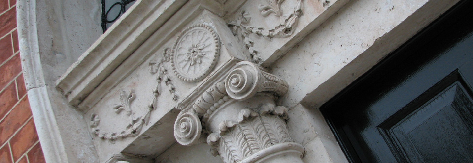
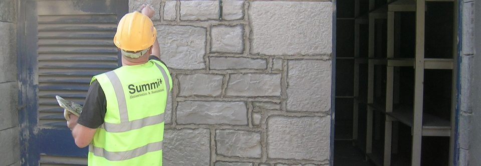
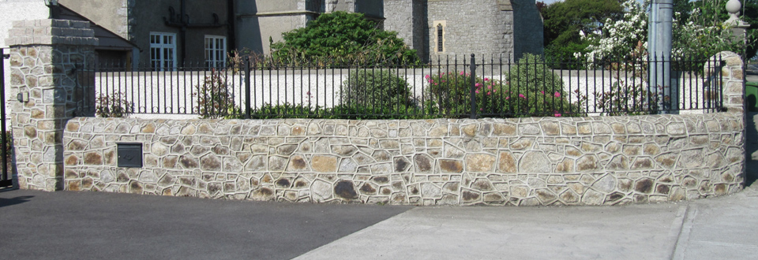

1 / 3

Stone Facading
Façade Restoration can take on many forms and if the building is a protected structure, we support with planning permission.
2 / 3

Roof Repairs
From Churches to Trinity College to Terrace Houses we have done them all.
3 / 3

Brick & Stone Masonry
Carefully completed using salvaged matching materials.
❮
❯